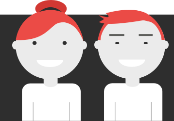

The Family
Background
Stewart family:
Mother: 38yo | Architect, Educated
Father: 42yo | Business owner, Educated
The kid: 10yo |Boy, Special needs
Family income: 200k/yr
Lucas has been in a foster home for 4 months. He is very inquisitive and creative, Lucas has a natural curiosity about the world and is willing to try just about any new thing.
Lucas is looking for a family that can share the love with him and preferably have pets.
The mother's need
She wants her son to have a friend and have someone on his age to support him when he grows up.
The father's need
The father thinks if they had another child, there would be less pressure on their first child. He is not very happy with her wife being too supportive of their son.
The child
The child: He doesn't think he wants a sibling, but he likes having friends and hanging out with them.